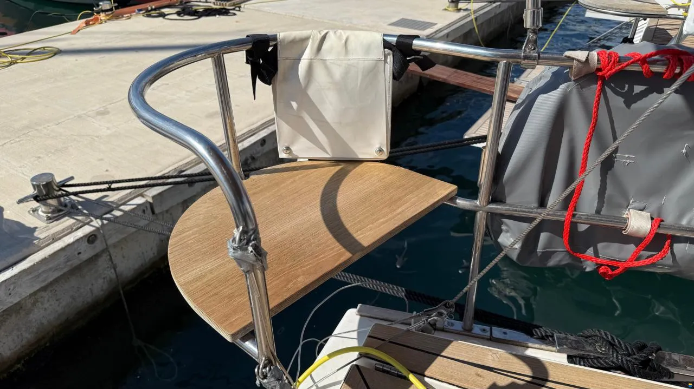

Регаты и релинги: безжалостная эксплуатация и искусство выживания
Инженерный разбор повреждений кормовых конструкций Elan 45.1 под пиковыми нагрузками от брасов геннакера. Методы холодной и горячей правки стали AISI 316, нюансы TIG-сварки и переход на палубные падеерсы.
⚓️ Анатомия поломки: почему страдает задний левый
Регата — это высокоприбыльная, но абсолютно безжалостная эксплуатация для круизной лодки. Две наши чартерные Elan 45.1 Impression регулярно ходят в гонках. Но есть узел, который спортивный азарт откровенно уничтожает — это кормовой релинг («трон»). Типичная гоночная картина: экипаж выкидывает геннакер площадью 110 м² на верхней границе ветрового диапазона. В пылу борьбы брас намертво упирается в тонкостенную нержавеющую трубу релинга, а пара человек весом натягивают снасть. Итог — деформация стальной конструкции.
Почему эта проблема вылезла на DIANA, а на EVA пока нет? Чистое шкиперское везение и разный стиль работы команд на поворотах. Силы, возникающие при натяжении браса в свежий ветер, измеряются сотнями килограммов. Опытные яхсмены на профильных форумах (например, myHanse.com) прямо предупреждают коллег: «Вы НЕ должны использовать эти конструкции для проводки шкотов геннакера. Нагрузка слишком велика. Используйте сквозные рымы на палубе». Левый борт страдает чаще, так как правый галс с геннакером является основным гоночным вектором подветренной стороны.

🛠️ Решение №1. Оперативный ремонт посреди сезона
Если труба погнута, но резьбовые основания еще не вырваны из гелькоута, задача — дожить до конца сезона без срыва чартерных контрактов. Сталь марки AISI 316 является аустенитной и пластичной, но склонна к наклепу, поэтому восстанавливать геометрию нужно аккуратно.
- Холодная правка: Применяется только при незначительных изгибах. Труба фиксируется через деревянные ложементы-опоры, и с помощью рычага или гидравлического домкрата изгиб медленно выбирается в обратную сторону. Нельзя давить в одну точку — металл пойдет волной. Обязателен контроль лупой на появление микротрещин.
- Горячая правка: Для серьезных заломов. Место деформации прогревается газовой горелкой до температуры 600–800 °C (контролируется визуально по темно-вишневому свечению). В горячем состоянии сталь правится без риска внутренних разрывов. После остывания шов зачищается и пассивируется для восстановления антикоррозийного оксидного слоя.
- Силовая накладка: Если металл наджаблен, поверх залома накладывается шина — половинка распиленной вдоль нержавеющей трубы чуть большего диаметра, затянутая силовыми хомутами.
🧰 Решение №2. Капитальный ремонт и аргоновая сварка
После завершения навигации поврежденный «трон» полностью демонтируется с палубы. Аргонодуговая сварка (TIG) — единственный профессиональный метод ремонта аустенитных сталей. Поврежденный замятый кусок трубы полностью вырезается болгаркой. На его место стык в стык вваривается новый отрезок трубы AISI 316 с аналогичной толщиной стенки. В качестве присадки используется нержавеющий пруток марки ER316L. Готовый сварной шов шлифуется, полируется войлоком до зеркального блеска и обрабатывается пассивирующим гелем.
Инженерный нюанс: Большинство серийных верфей крепят релинги к палубе на тонкие приваренные шпильки М6. Это самое слабое звено при ударе. В ходе капитального рефита мы полностью срезаем старые ножки и перевариваем основания под усиленные шпильки М8 из судовой нержавейки.
🧱 Решение №3. Инженерная защита от «дурака»
Лечить следствие дорого, правильнее изменить геометрию нагрузок снастей. Чтобы бегущий такелаж больше никогда не гнул леера, мы внедрили две доработки:
- Установка палубного падеерса: Точка крепления кормового блока браса полностью перенесена с релинга на палубу. Мы врезали складной рым (падеерс) из кованой нержавейки, закрепив его сквозными болтами через силовую внутреннюю пластину-подложку толщиной 4 мм. Теперь вся колоссальная нагрузка уходит в жесткий палубный сэндвич.
- Использование барбер-холлеров: Натяжение и угол проводки браса регулируются через промежуточные оттяжки (барбер-холлеры), блоки которых заведены на штатные палубные утки. Это полностью разгрузило верхний металлический контур кормы.
💎 Вывод
Кормовой релинг на круизной яхте, участвующей в регатах — это скрытый расходник. Чтобы поломка не застала врасплох, мы держим в ремонтном комплекте базы метровую заготовку трубы диаметром 25 мм, банку пассивирующего геля, усиленный крепеж М8 и запасные складные палубные рымы. Модернизация проводки браса разгружает металл и гарантирует, что судно выдержит безжалостную гоночную эксплуатацию на пути к пьедесталу.